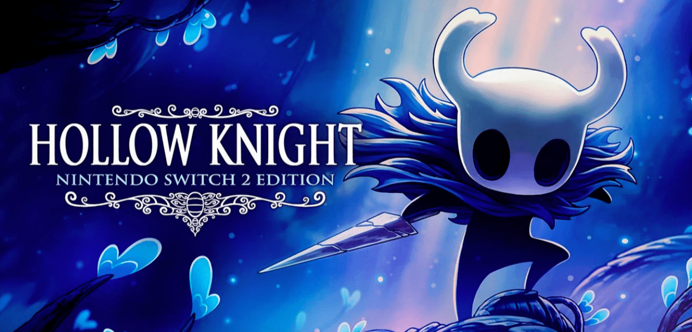
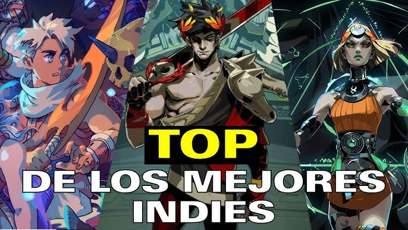
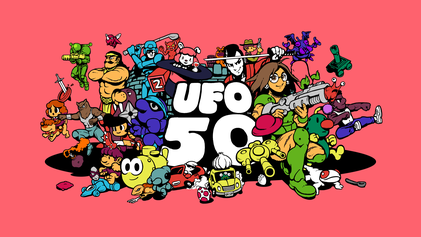
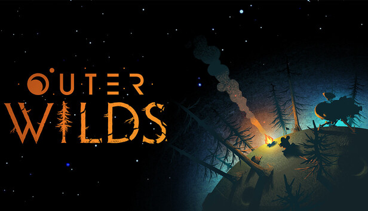

Hollow Knight
Metroidvania

Descubre los mejores videojuegos independientes
Balatro es un roguelike de construcción de mazos donde el póker solo es el punto de partida. En cada partida intentas superar “ciegas” cada vez más difíciles armando manos de póker, pero el verdadero giro está en los comodines, cartas especiales y mejoras que cambian por completo la forma en que puntúas. Eso hace que cada run se sienta distinta, porque no solo juegas cartas: vas creando una estrategia nueva sobre la marcha.
Lo que lo volvió tan reconocido es que combina una idea muy simple con una profundidad enorme. Tiene ese equilibrio raro entre ser fácil de entender al principio y volverse adictivo por la cantidad de sinergias, multiplicadores y decisiones que permite, algo que muchos análisis destacan como la razón de su impacto. Además, fue creado por una sola persona, LocalThunk, y aun así logró convertirse en un fenómeno de crítica y público por su diseño muy pulido, su ritmo de progresión y su capacidad de enganchar partida tras partida.

Hades II es un roguelike de acción donde controlas a Melinoë, la Princesa del Inframundo, en su misión por derrotar a Cronos, el Titán del Tiempo. Cada intento de escapar y avanzar te permite obtener nuevas armas, bendiciones de los dioses del Olimpo y habilidades que transforman por completo tu estilo de combate, haciendo que cada partida sea diferente.
Ha sido elogiado por tomar la base del primer Hades y mejorar prácticamente todos sus sistemas: ofrece más variedad de armas, un combate más profundo y una narrativa que evoluciona constantemente entre partidas. Incluso en acceso anticipado fue considerado uno de los mejores juegos del año gracias al alto nivel de pulido y a la calidad de su diseño.

Animal Well es un metroidvania centrado en la exploración y los acertijos. Despiertas en un misterioso pozo habitado por criaturas y debes descubrir sus secretos utilizando objetos con múltiples usos en lugar de habilidades tradicionales de combate.
Destacó por demostrar que un metroidvania puede centrarse casi por completo en la curiosidad y el descubrimiento. Sus rompecabezas esconden secretos durante decenas de horas y la comunidad pasó meses resolviendo misterios ocultos, convirtiéndolo en uno de los indies más comentados de 2024.

Nine Sols es un metroidvania de acción inspirado en Sekiro que combina exploración con un sistema de combate basado en desvíos y contraataques. La historia mezcla mitología taoísta con ciencia ficción en un mundo conocido como Taopunk.
Fue muy bien recibido por ofrecer uno de los mejores sistemas de combate del género, donde la precisión y el dominio de las mecánicas son fundamentales. También destacó por su dirección artística dibujada a mano y una historia más elaborada que la de muchos metroidvania.

UFO 50 reúne cincuenta juegos completamente originales presentados como si fueran el catálogo perdido de una consola ficticia de los años ochenta. Cada título pertenece a un género distinto y todos comparten una estética retro.
No es una colección de minijuegos, sino cincuenta juegos completos con mecánicas propias. La enorme creatividad de sus propuestas y la calidad general de casi todo el catálogo hicieron que fuera considerado uno de los proyectos independientes más ambiciosos y originales de los últimos años.
Hollow Knight es un metroidvania donde exploras Hallownest, un antiguo reino de insectos en ruinas lleno de enemigos, secretos y personajes memorables. A medida que avanzas obtienes nuevas habilidades que permiten acceder a zonas antes inaccesibles.
Se convirtió en un referente del género gracias a su enorme mundo interconectado, su excelente diseño de exploración y algunos de los combates contra jefes más memorables de los videojuegos independientes. Además, ofrece una gran cantidad de contenido a un precio reducido, lo que fortaleció aún más su reputación.

Stardew Valley es un simulador de granja donde heredas la antigua finca de tu abuelo y comienzas una nueva vida cultivando, pescando, criando animales, explorando minas y formando relaciones con los habitantes del pueblo.
Logró modernizar el género de simulación agrícola combinando libertad, progresión constante y una enorme cantidad de actividades. Además, fue desarrollado prácticamente por una sola persona, Eric Barone (ConcernedApe), quien continuó ampliándolo durante años con actualizaciones gratuitas que mantuvieron a la comunidad activa.

Celeste es un juego de plataformas donde acompañas a Madeline en su ascenso a la montaña Celeste. Cada nivel presenta desafíos que requieren precisión y reflejos, mientras la historia aborda temas como la ansiedad, la autoestima y el crecimiento personal.
Es considerado uno de los mejores juegos de plataformas modernos por el equilibrio entre dificultad y accesibilidad. Sus controles extremadamente precisos, su excelente banda sonora y una historia emotiva hicieron que trascendiera más allá de su género.

Outer Wilds es una aventura de exploración espacial en la que quedas atrapado en un bucle temporal de 22 minutos. Debes recorrer un sistema solar lleno de misterios para descubrir por qué el universo está condenado a desaparecer.
Su progreso depende únicamente del conocimiento que obtiene el jugador, no de mejoras o niveles. Cada descubrimiento cambia la forma en que entiendes el mundo y abre nuevas posibilidades, convirtiéndolo en una de las experiencias narrativas y de exploración más originales de la industria.

Slay the Spire es un roguelike de construcción de mazos donde asciendes por una torre enfrentando enemigos mediante cartas. En cada partida construyes un mazo diferente, consigues reliquias con efectos especiales y eliges rutas que cambian el desarrollo de la aventura.
Ha sido elogiado por tomar la base del primer Hades y mejorar prácticamente todos sus sistemas: ofrece más variedad de armas, un combate más profundo y una narrativa que evoluciona constantemente entre partidas. Incluso en acceso anticipado fue considerado uno de los mejores juegos del año gracias al alto nivel de pulido y a la calidad de su diseño.
El exitoso juego de cartas sigue siendo uno de los indies más reconocidos del año.
Años después de su lanzamiento sigue siendo uno de los mejores Metroidvania.